Odontopediatria
Dentista infantil e dentista de criança com atendimento humanizado — incluindo pacientes autistas (TEA) e com necessidades especiais.
Na Clínica Amalos, em Euclides da Cunha, cada sorriso e cada história recebem um cuidado completo — do dentinho de leite ao bem-estar de toda a família, com carinho, respeito e atenção individual.
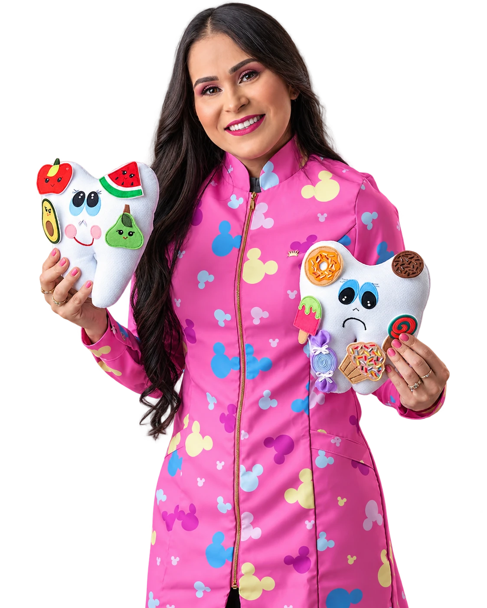
A Clínica Amalos nasceu para ser muito mais do que uma clínica "de um assunto só". Aqui, cuidamos da saúde da sua família em diversas frentes — do sorriso ao bem-estar emocional, do desenvolvimento infantil à autoestima — tudo em um só lugar, com o mesmo carinho de sempre.
Sob a direção técnica da Dra. Edivânia Barboza (Odontopediatria, CROBA 20706), reunimos uma equipe de especialistas dedicados a oferecer um atendimento humano, atencioso e verdadeiramente integrativo para todas as idades.
Uma equipe completa de especialistas, reunida para cuidar de vocês com atenção e dedicação.
Dentista infantil e dentista de criança com atendimento humanizado — incluindo pacientes autistas (TEA) e com necessidades especiais.
Ortodontista e ortopedia funcional dos maxilares para um sorriso alinhado e saudável, com acompanhamento próximo.
Sedação em consultório odontológico para consultas e procedimentos com mais tranquilidade, segurança e conforto.
Avaliação do frênulo lingual em recém-nascidos para identificar precocemente a anquiloglossia (língua presa).
Frenectomia lingual e labial com laserterapia, para uma recuperação mais rápida e confortável.
Acompanhamento do crescimento e desenvolvimento infantil com muito cuidado e atenção.
Estímulo à fala, linguagem e funções orais em todas as fases da vida.
Espaço de escuta e acolhimento para cuidar da saúde emocional de cada paciente.
Procedimentos estéticos faciais com segurança, naturalidade e cuidado individual.
Cuidados especializados com a saúde do couro cabeludo e dos cabelos.
Atendimento clínico completo para cuidar da saúde de toda a família.
Sabemos que cada paciente é único, e por isso nosso atendimento é sempre respeitoso, individual e sem pressa. Preparamos nosso ambiente e nossa equipe para o atendimento humanizado de pacientes autistas (TEA) e com necessidades especiais, incluindo sedação em consultório odontológico quando necessário.
Profissionais dedicados, cada um em sua área, sob a direção técnica da Dra. Edivânia Barboza.
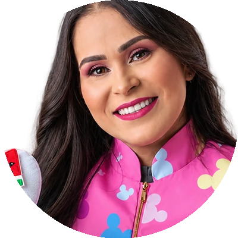
Especialista em Odontopediatria, Amamentação e Freios Orais, habilitada em Sedação e Laser de Baixa e Alta Potência.
📸 @clinicaamalos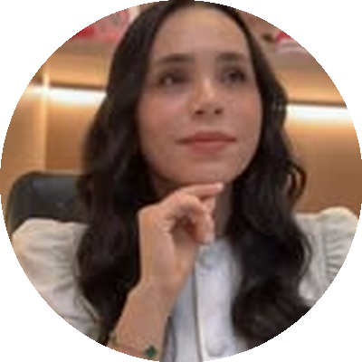
Pós-graduada em Estética Avançada e Tricologia. Tratamentos clínicos e personalizados para melasma e alopecias.
📸 @dra.karlabarbozaEspecialista em tratamento de canal, adulto e infantil. R1 em Cirurgia Bucomaxilofacial pela PUC-PR.
📸 @dr.alissoncarlos_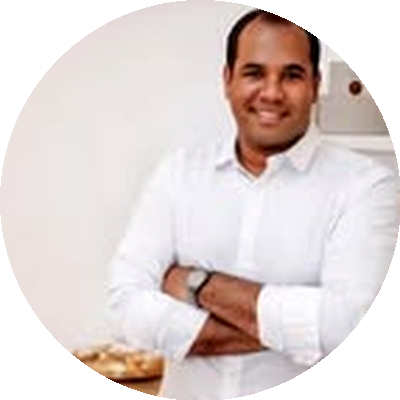
Especialista em cirurgias avançadas, atendendo em Salvador e Euclides da Cunha.
📸 @dr.dmagapito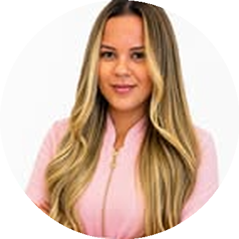
Teste da orelhinha e da linguinha, motricidade orofacial e transtornos dos sons da fala.
📸 @fonoeduarda_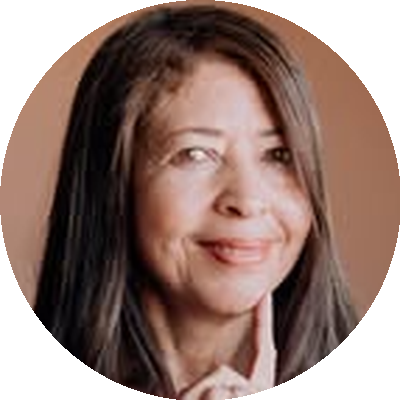
Cuidado especializado com a voz, para o bem-estar e a comunicação de cada paciente.
📸 @anamariafono_Cirurgião-Dentista especialista em Ortodontia, atendendo em Euclides da Cunha, BA.
📸 @brunoteles_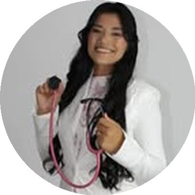
Cuidando do crescimento, desenvolvimento e acolhimento das famílias, com carinho de mãe e médica.
📸 @dra.evaalvessConsultórios preparados com carinho para deixar crianças e famílias à vontade.
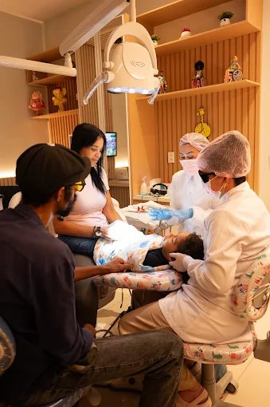
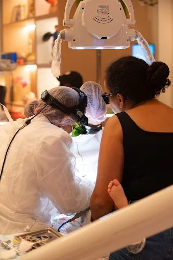
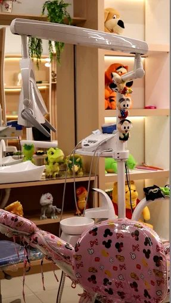
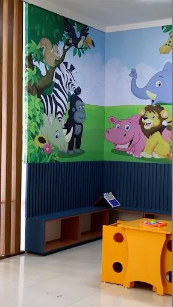
Avaliações reais de pacientes no Google.
★★★★★MMaria Jeane Reis Cabral"Referência em atendimento humanizado. Impressionada com o cuidado aos pacientes especiais e a segurança na condução da sedação, sempre respeitando o tempo de cada criança. Super recomendo!"
★★★★★LLucas de Jesus Santos"Atendimento nota dez, já começa bem na recepção. A Dra. Edivânia é uma das melhores médicas, com esclarecimento total. Quem levar os filhos aqui não vai se arrepender!"
★★★★★LLarissa Santos"Muito satisfeita com o cuidado com meu filho. A Dra. Edivânia explicou tudo com clareza e me deixou à vontade, mesmo com sedação. Muito cuidado e segurança. Super recomendo!"
★★★★★BBianca da Silva Jesus"Excelente atendimento, feito com muito profissionalismo, carinho e dedicação. Cuidado e respeito de verdade com as crianças e suas famílias. Super recomendo!"
Agende agora sua consulta e venha sentir o cuidado da Clínica Amalos de perto.
Agendar minha consulta